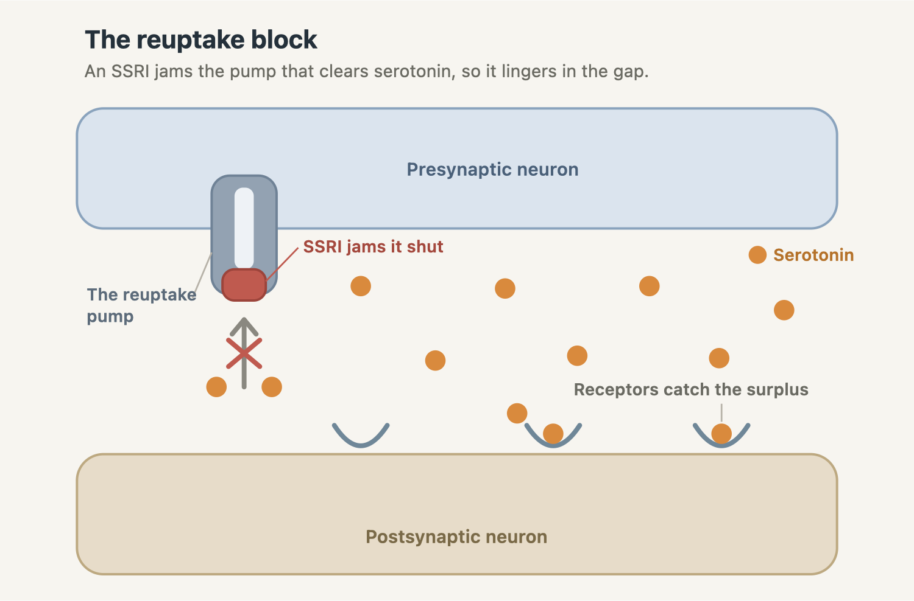

How can one drug treat both depression and anxiety?
The same pill is a first choice for depression and for panic, social anxiety, and OCD. That one fact strains the chemical imbalance story, and it opens the clearest window we have onto how antidepressants really work.

Start with something that shouldn't quite add up. The same pill a doctor hands you for depression is also a first choice for panic disorder, for social anxiety, for obsessive-compulsive disorder, and for post-traumatic stress. One molecule, a whole spread of unrelated diagnoses. That's a strange thing to expect if the story most of us grew up on were true, that each of these is its own chemical imbalance and the drug simply refills what's missing.
The drug is usually an SSRI, a selective serotonin reuptake inhibitor, and the question of how one of them reaches so many different conditions turns out to be the clearest way in to what antidepressants actually do. It unravels the old chemical imbalance story along the way.
The story we were told
For a long time the explanation was tidy. Depression came from low serotonin, the feel-good chemical, and drugs like Prozac worked by topping it back up. The idea grew out of a genuine observation. In the 1950s and 60s, drugs that happened to raise a class of brain chemicals called monoamines, the signals neurons use to talk to each other, seemed to lift mood in some patients. The monoamines are a family that includes serotonin, noradrenaline, and dopamine, and out of that grew the monoamine hypothesis. Its first careful statement, from Joseph Schildkraut in 1965, was actually built around noradrenaline rather than serotonin. When SSRIs arrived in the late 1980s, tuned to raise serotonin in particular, marketing sanded the whole idea down to a slogan. Low serotonin. Chemical imbalance. Take this to fix it.
The shortage that never showed up
The trouble is that when researchers went looking for the shortage, it wasn't there. In 2022, a team led by Joanna Moncrieff published a systematic umbrella review in Molecular Psychiatry, a study of studies of studies that gathered every major line of evidence that should reveal a serotonin difference if the theory held. Serotonin and its breakdown products in body fluids. Receptor levels. The serotonin transporter. Genetics. Experiments that deliberately lower serotonin. Across all of it, they found no consistent sign that depressed people run lower on serotonin than anyone else.
The review was sharply contested. A rebuttal signed by dozens of researchers, led by Sameer Jauhar and Philip Cowen, argued that it understated the evidence and that an umbrella review was too blunt an instrument for the question. So it's worth being precise about where the two camps actually stand. Almost no one still defends the cartoon version, that depression is simply low serotonin waiting to be topped up, and few serious researchers ever did. The living argument is over whether subtler irregularities in the serotonin system matter. The simple shortage is the part nobody's defending.
One drug, many problems
Now back to the puzzle, which makes the point even more sharply than the missing shortage does. Take paroxetine, sold as Paxil. One of its approved uses is depression. The rest are obsessive-compulsive disorder, panic disorder, social anxiety disorder, generalized anxiety disorder, and post-traumatic stress. One molecule, six distinct psychiatric diagnoses on a single label.
And these aren't rare corners of medicine. Anxiety disorders are the most common mental health conditions we have. In large United States surveys, about 18 percent of adults meet the criteria for one in a given year, against roughly 7 percent for major depression, and the two rarely travel alone. Nearly half of everyone who has ever been depressed has also lived with an anxiety disorder.
If depression were a serotonin shortage and panic disorder were some other, separate imbalance, you'd hardly expect one serotonin drug to be the first choice for both, and for four more conditions besides. A remedy built to correct a single, precise deficit shouldn't also correct five unrelated ones. That it does is a strong signal that the story was never about refilling a specific missing chemical, diagnosis by diagnosis. It might mean these conditions share something in the serotonin system, or that the drug is doing something more general than restoring any one molecule.
The six-week clue
The sharpest clue of all is timing. An SSRI blocks the reuptake of serotonin and raises the amount sitting in the gaps between neurons within hours of the first dose. If flooding the brain with serotonin were the cure, people would feel better by that first afternoon. They don't. Some relief can begin in the first week or two, but the fuller benefit gathers over roughly two to six weeks, nothing like the instant lift you'd expect from simply refilling a chemical. That gap, between an immediate change in chemistry and a benefit that arrives weeks later, is one of the oldest puzzles in psychiatry.

So the serotonin climbs almost at once, and the benefit arrives weeks behind it. Whatever does the healing, it isn't the fast part. It's something slower that the extra serotonin sets in motion.
The six week gap
Serotonin rises in hours. The benefit takes weeks. Drag to see the distance between them.
So how do they actually work?
Here's the honest answer. We aren't sure how they do it. But the leading ideas share a common shape, and it isn't chemistry sloshing around a tank. It's the brain slowly reorganizing itself.
One idea begins with the neurons that make serotonin. At first, the surplus trips a brake, a receptor called the 5-HT1A autoreceptor that tells those neurons to quiet down. Over three or four weeks that brake gradually loosens and the system settles at a new baseline, on a timeline that roughly tracks when many people start to feel better.
A second idea is about plasticity, the brain's capacity to rewire itself. Prolonged stress seems to prune connections and lower a growth factor called BDNF in mood-related circuits. Antidepressants slowly push the other way, lifting BDNF and helping neurons rebuild those connections. In animals, some of the behavioral effects even depend on the birth of new neurons in the hippocampus, though whether that kind of neurogenesis counts for much in the adult human brain is still debated.
A third idea, and maybe the most human, comes from Catherine Harmer and her colleagues. Within days, long before mood shifts, SSRIs change how the brain reads emotion. People begin to register fearful and hostile faces a little less sharply, and warm ones a little more. The thought is that the drug alters the raw feed, the emotional signal coming in, and then ordinary life does the rest. Week after week of seeing the world through a slightly kinder filter, and mood follows.
None of these is proven to be the whole answer, and they're less rivals than pieces of one picture. But they all point the same direction. The drug isn't refilling a missing chemical. It's nudging the brain to rebuild and to re-read, and that takes time.
The serotonin climbs in hours. The benefit takes weeks. Whatever heals isn't the fast part.
Why one drug for two problems, then?
This is also why one drug can reach depression, anxiety, and the conditions that sit between them. Psychiatry increasingly reads these not as separate machines with separate broken parts, but as overlapping. Depression and anxiety appear to share much of the same wiring and the same mental habits, the circling worry, the reflex toward the worst reading of things. A drug that loosens those shared processes, that steadies circuits and adjusts the emotional filter, will help across the whole cluster rather than repairing one precise fault. One tool for many uses, because the conditions are more alike beneath the surface than their separate names let on.
What we can honestly say
So the tidy story is wrong in its particulars, and the honest one is more interesting. Antidepressants don't just top up a serotonin shortage. They're a slow nudge to a brain that reorganizes itself, which is why they take weeks, why one drug reaches conditions that look nothing alike on the surface, and why serotonin matters without being the simple cause.
None of this means the drugs are fake, or that anyone should stop taking them. They help many people. In a 2018 review led by Andrea Cipriani, the largest of its kind, covering more than 116,000 patients, every one of 21 antidepressants beat placebo. The average benefit is modest, and how much it helps varies from one person to the next. If you're on one and it helps you, that's real. Stopping abruptly can trigger genuine discontinuation symptoms and a rebound in low mood, so any change belongs with your prescriber, as a careful taper, not a decision made after reading an article. Medication is also only one tool, alongside talking therapies and other kinds of support.
What the science asks of us is humility. We treat depression and anxiety with drugs that genuinely help people, while admitting we're still working out how. That's less tidy than a slogan about a chemical imbalance. It's also the truth, and it's the more hopeful one, because a brain that can be coaxed into rebuilding is a brain that can get better.
For another brain chemical buried under the same kind of myth, see why dopamine doesn't do what you think it does.